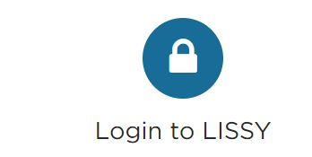

7 LIS Data
Some of the countries that are not available in DataLibWeb can be found in the repository of the LIS Cross-National Data Center (hereafter, LIS). Currently, PovcalNet uses LIS data for 8 high-income economies: AUS, CAN, DEU, ISR, JPN, KOR, TWN & USA, plus the Pre-EUSILC years (generally before 2002) of European Economies.
LIS datasets cannot be downloaded in full; however, they provide a remote-execution system, LISSY, that allows us interact with their microdata without having access to the individual records. We have developed a set of Stata do-files to interact with LISSY and aggregate the welfare distribution of our countries of interest to 400 bins. Then, these data is organized locally and shared with the Poverty GP to be included in DataLibWeb as a collection independent from GPWG.
7.1 The LIS_data repository
In order to work with the LIS data you need to clone the repository PovcalNet-Team/LIS/_data. You will find in there three folders, 00.LIS_output, 01.programs, and 02.data.
7.2 Interacting with LISSY
Opening an account in LISSY:
To interact with the LIS data you need to first register here, by first completing the LIS microdata User Registration Form, and then submitting it through the same website using your institutional e-mail account. Within a couple of days, you will receive an e-mail from LIS containing your username and password.
You do not get to choose your own username or password. LISdatacenter creates both for you and those won’t change in time. Make sure to save that e-mail and record that information for your future log-ins. Also, know that LISSY passwords expire each year on December 31st. While your password won’t change, it must be renewedhere after January 1st.
Interacting with LISSY:
To get acquainted with LISSY’s interface, coding structure, database naming and variables available, and learn how to compute estimates within LISSY we highly recommend taking some time to review the tutorials and self-teaching materials. However, in order to update the 400 bins twice a year, Stata codes have been previously written, so you simply need to follow the 5 steps in the next section.
7.3 Getting the 400 bins from LISSY
1. To log in, go to LIS main page, scroll down and click on the lock icon 
2. Feed the three drop-down menus on top of the platform with the following information:
Project: LIS
Package: Stata
Subject: (Choose a name Ex: “Bins #1 - Dec 2020”)
The LISSY platform cannot run the code for ALL surveys available at once. If you attempt to do so, your project will stop and you will receive an e-mail containing the text:
#####################################################
Your job has been killed and will be not executed
#####################################################To avoid this, we need to run the code in groups of 5 to 6 countries, depending on the amount of years in each of them. Currently, LIS has data for 52 countries (26 of them are in the EUSILC project, and 26 do not) which usually take approximately 10 rounds of this process.
3. Copy and paste the entire content of 01.LIS_400bins.do file into
the the main large command window and update the locals in lines 23-24 with the
LIS 2-letter acronyms of the group of 5-6 countries in each round.
local silc "at be cz"
local nosilc "au br"Remember to update the subject with each round (Ex: “Bins #2 - Dec 2020”) so you keep track of the number of output files. Be careful not to leave out [or repeat] any country in the process.
4. Click on the green arrow icon to submit your project. You will get an e-mail within some minutes with your output. If the system kills your project, your group of countries was probably too large. Remove one country and try again.
5. Copy the entire text in the output e-mail you receive for each round,
open your notepad and paste. Save each round in the \00.LIS_output
folder. Save each text file with the name LISSY_Dec202@_#.txt, [where @
is the year and # the round]. Consistency with this naming format is important
for the next step (02.LIS_organize_output.do file)
7.4 From Text file to datalibweb structure
We now need to convert the the text files generated by the LISSY system to
actual data suitable for datalibweb. This structure is suggested by the
International Household Survey Network (IHSN). Once the
data is saved in folder 00.LIS_output you need to execute the file
02.LIS_organize_output.do. This file created to be executed in just one
go. However, it could be ran in sections taking advantage of the different
frames along
the code.
Before you execute this code, you need to ensure a few things,
1. Get rcall working in your computer
The processing of the text files is not done anymore on Stata but in R. To avoid
changing systems, we need to execute R code directly from Stata. In order to do
this, you need to make sure to have install R in your computer and also the
Stata command rcall. The do-file 02.LIS_organize_output.do will check if you
have it installed and will install it for you in case it is not. However, you
can run the lines below to make sure everything is working fine. Also, you can
take a look at the help file of rcall to get familiar with it.
cap which rcall
if (_rc) {
cap which github
if (_rc) {
net install github, from("https://haghish.github.io/github/")
}
github install haghish/rcall, stable
}2. Personal Drive
Make sure to add your UPI to the appropriate sections it appears by typing
disp lower("`c(username)'") , following the example below,
if (lower("`c(username)'") == "wbxxxxx") {
local dir "c:/Users/wbxxxxx/OneDrive - WBG/WorldBank/DECDG/PovcalNet Team/LIS_data"
}3. Directives of the code
This do-file works like an ado-file in the sense that the output depends on the value of some local macros,
global update_surveynames = 1 // 1 to update survey names.
global replace = 0 // 1 to replace data in memory even if it has not changed
global p_drive_output_dir = 0 // 1 to use default Vintage_control folderIf local update_surveynames is set to 1, the code will load the sheet
LIS_survname from the the file 02.data/_aux/LIS datasets.xlsx and updated
the file 02.data/_aux/LIS_survname.dta. If replace is set to 1, the code
will replace any output with the same name. Otherwise, it will create a new
vintage version if the two files are different. If they are not different, the
code will do nothing. local p_drive_output_dir is deprecated, so you must
leave it as 0.
4. Pattern of the text files
When the text files with the information from LIS are stored in 00.LIS_output,
they should be stored in a systematic way so that they could be loaded and
processed at the same time. This can be done by specifying in a matching regular
expression in local pattern. For instance, all the files downloaded in
December, 2020 could by loaded and processed using the directive,
local pattern = "LISSY_Dec2020.*txt".
7.5 Compare new LIS data to Datalibweb inventory
To identify what data is new and what data has changed with respect to the one
available in datalibweb, you need to execute do-file 03.LIS_compare_dlw.do.
Again, this do-file is intended to be executed in one run, but you can do it in
parts taking advantage of the different frames. At the end of the execution the
file 02.data/comparison_results.dta is created. This file contains three
important variables wf, wt, and gn, which correspond to the ration of
welfare means, weight means, and Gini coefficient between the data in datalibweb
and the data in the folder, p:/01.PovcalNet/03.QA/06.LIS/03.Vintage_control.
You should only send to the Poverty GP those surveys for which at least one of these three variables is different to 1.
7.6 The Excel file LIS datasets.xlsx
With each LIS data update performed, we must first identify from LIS the new surveys (countries and/or years) they had recently added. LIS send users e-mails informing about new datasets added, and also releases newsletters with this information.
Inside the 02.data folder of your LIS_data GIT repository you will find a
_aux sub folder, and the LIS datasets.xlsx file placed in there. We must
manually update the tab LIS_survname tab adding new rows to the sheet.
All necessary information to fill up this metadata (household size, currency,
etc.) can be found in METIS.
ACRONYMS: The column survey_acronym is created by us. If you come across a new survey for which an acronym has not been previously established, the rules applied in the past by the team were the following:
Acronyms are created based on the ENGLISH name of the survey. (Ex: German Transfer Survey (Germany) is “GTS,” followed by the suffix -LIS; thus GTS-LIS.
For the surveys that were Microcensus, we created the acronym “MC,” and for Denmark’s Law Model, “LM.”
All acronyms are created in capital letters.
Finally, while the survey names in METIS are in English, some of the acronyms in parenthesis are still in the original language. In those cases we translated them to English. For instance, the survey name “Household Budget Survey (BdF) (France)” from METIS was changed to “Household Budget Survey (HBS) (France)” in the column surveyname of the excel.
7.7 Prepare data for the Poverty GP
Finally, the do-file 04.Append_new_LIS_bases.do prepares the data to be shared
with the Poverty GP. Note that this do-file ONLY appends the 400 bins data of
surveys that are new and those where welfare changed, which are
identified in the previous step /comparison_results.dta as those gn != 1.
Before running the code, make sure to change the output file name to the
date of your update (last one saved was “LIS_bins_Dec_21_2020.dta”). The
output is saved in P:\01.PovcalNet\03.QA\06.LIS\04.Share_with_GP.
Finally, quickly prepare a short .dta file importing the metadata already created in the LIS_survname tab from the Excel, keeping ONLY the surveys of the append output you just run and send both files to Minh Cong Nguyen <mnguyen3@worldbank.org> from the Poverty GP.